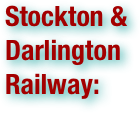

Industrial Revolution Terms
.pdf (. . . )


An artisan is a skilled manual worker who makes items that may be functional or strictly decorative, including furniture, clothing, jewelry, household items, and tools. (wikipedia.org. Accessed August 7, 2011.)

The Bessemer process was the first inexpensive industrial process for the mass-production of steel from molten pig iron. The process is named after its inventor, Henry Bessemer, who took out a patent on the process in 1855. The process was independently discovered in 1851 by William Kelly. The process had also been used outside of Europe for hundreds of years, but not on an industrial scale. The key principle is removal of impurities from the iron by oxidation with air being blown through the molten iron. The oxidation also raises the temperature of the iron mass and keeps it molten. The process using a basic refractory lining is known as the basic Bessemer process or Gilchrist-Thomas process after the discoverer Sidney Gilchrist Thomas. (wikipedia.org. Accessed August 8, 2011.)

The Beverly Cotton Manufactory was the first cotton mill to be built in America, and the largest cotton mill to be built during its era. It was built hoping for economic success, but reached a downturn due to technical limitations of the then early production process and limitations of the machines being used. Being the birthplace and testing grounds of the cotton milling industry at the time, it has been called the birthplace of the American Industrial Revolution. (wikipedia.org. Accessed August 7, 2011.)

A blast furnace is a type of metallurgical furnace used for smelting to produce industrial metals, generally iron. In a blast furnace, fuel and ore and flux (limestone) are continuously supplied through the top of the furnace, while air (sometimes with oxygen enrichment) is blown into the bottom of the chamber, so that the chemical reactions take place throughout the furnace as the material moves downward. The end products are usually molten metal and slag phases tapped from the bottom, and flue gases exiting from the top of the furnace. Blast furnaces are to be contrasted with air furnaces (such as reverberatory furnaces), which were naturally aspirated, usually by the convection of hot gases in a chimney flue. According to this broad definition, bloomeries for iron, blowing houses for tin, and smelt mills for lead would be classified as blast furnaces. However, the term has usually been limited to those used for smelting iron ore to produce pig iron, an intermediate material used in the production of commercial iron and steel. (wikipedia.org. Accessed August 7, 2011.)

Canals are man-made channels for water. There are two types of canal: 1) Waterways: navigable transportation canals used for carrying ships and boats shipping goods and conveying people. . . and 2) Aqueducts: water supply canals that are used for the conveyance and delivery of potable water for human consumption, municipal uses, and agriculture irrigation. Rills and acequias are small versions. . . The British canal system of water transport played a vital role in the United Kingdom's Industrial Revolution at a time when roads were only just emerging from the medieval mud and long trains of pack horses were the only means of "mass" transit by road of raw materials and finished products (it was no accident that amongst the first canal promoters were the pottery manufacturers of Staffordshire). The UK was the first country to acquire a nationwide canal network. (wikipedia.org. Accessed August 7, 2011.)

Carding is a mechanical process that breaks up locks and unorganized clumps of fiber and then aligns the individual fibers so that they are more or less parallel with each other. . . These ordered fibers can then be passed on to other processes that are specific to the desired end use of the fiber: batting, felt, woolen or worsted yarn, etc. Carding can also be used to create blends of different fibers or different colors. (wikipedia.org. Accessed August 7, 2011.)

Chartism was a movement for political and social reform in the United Kingdom during the mid-19th century, between 1838 and 1850. It takes its name from the People's Charter of 1838. Chartism was possibly the first mass working class labour movement in the world. Its leaders have often been described as either "physical force" or "moral force" leaders, depending upon their attitudes to violent protest. Chartists were largely unsuccessful at convincing Parliament to reform the voting system of the mid-19th century; however, this movement caught the interest of the working class. The working class interest in politics from that point on aided later suffrage movements. (wikipedia.org. Accessed August 7, 2011.)

Child labor refers to the employment of children at regular and sustained labor. This practice is considered exploitative by many international organizations and is illegal in many countries. Child labor was employed to varying extents through most of history, but entered public dispute with the advent of universal schooling, with changes in working conditions during the industrial revolution, and with the emergence of the concepts of workers' and children's rights. . . During the Industrial Revolution, children as young as four were employed in production factories with dangerous, and often fatal, working conditions. Based on this understanding of the use of children as laborers, it is now considered by wealthy countries to be a human rights violation, and is outlawed, while some poorer countries may allow or tolerate child labour. Child labor can also be defined as the full-time employment of children who are under a minimum legal age. The Victorian era became notorious for employing young children in factories and mines and as chimney sweeps. Child labor played an important role in the Industrial Revolution from its outset, often brought about by economic hardship, Charles Dickens for example worked at the age of 12 in a blacking factory, with his family in debtor's prison. The children of the poor were expected to help towards the family budget, often working long hours in dangerous jobs for low pay, earning 10-20% of an adult male's wage. In England and Scotland in 1788, two-thirds of the workers in 143 water-powered cotton mills were described as children. In 19th-century Great Britain, one-third of poor families were without a breadwinner, as a result of death or abandonment, obliging many children to work from a young age. In coal mines, children would crawl through tunnels too narrow and low for adults. Children also worked as errand boys, crossing sweepers, shoe blacks, or selling matches, flowers and other cheap goods. Some children undertook work as apprentices to respectable trades, such as building or as domestic servants (there were over 120,000 domestic servants in London in the mid-18th century). Working hours were long: builders worked 64 hours a week in summer and 52 in winter, while domestic servants worked 80 hour weeks. Children as young as three were put to work. A high number of children also worked as prostitutes. Many children (and adults) worked 16 hour days. As early as 1802 and 1819 Factory Acts were passed to regulate the working hours of workhouse children in factories and cotton mills to 12 hours per day. These acts were largely ineffective and after radical agitation, by for example the "Short Time Committees" in 1831, a Royal Commission recommended in 1833 that children aged 11–18 should work a maximum of 12 hours per day, children aged 9–11 a maximum of eight hours, and children under the age of nine were no longer permitted to work. This act however only applied to the textile industry, and further agitation led to another act in 1847 limiting both adults and children to 10 hour working days. An estimated 1.7 million children under the age of fifteen were employed in American industry by 1900. In 1910, over 2 million children in the same age group were employed in the United States. (wikipedia.org. Accessed August 7, 2011.)

Due to its abundance, coal has been mined in various parts of the world throughout history and continues to be an important economic activity today. Compared to wood fuels, coal yields a higher amount of energy per mass and could be obtained in areas where wood is not readily available. Though historically used as a means of household heating, coal is now mostly used in industry, especially in smelting and alloy production, as well as electricity generation. Large-scale coal mining developed during the Industrial Revolution, and coal provided the main source of primary energy for industry and transportation in the West from the 18th century to the 1950s. Coal remains an important energy source, due to its low cost and abundance when compared to other fuels, particularly for electricity generation. However, coal is also mined today on a large scale by open pit methods wherever the coal strata strike the surface and is relatively shallow. Britain developed the main techniques of underground coal mining from the late 18th century onward with further progress being driven by 19th century and early 20th century progress. However oil and its associated fuels began to be used as alternative from this time onward. By the late 20th century coal was for the most part replaced in domestic as well as industrial and transportation usage by oil, natural gas or electricity produced from oil, gas, nuclear power or renewable energy sources. Since 1890, coal mining has also been a political and social issue. Coal miners' labour and trade unions became powerful in many countries in the 20th century, and often the miners were leaders of the Left or Socialist movements (as in Britain, Germany, Poland, Japan, Canada and the U.S.) Since 1970, environmental issues have been increasingly important, including the health of miners, destruction of the landscape from strip mines and mountaintop removal, air pollution, and coal combustion's contribution to global warming. (wikipedia.org. Accessed August 7, 2011.)

Coke is the solid carbonaceous material derived from destructive distillation of low-ash, low-sulfur bituminous coal. Cokes from coal are grey, hard, and porous. While coke can be formed naturally, the commonly used form is man-made. (wikipedia.org. Accessed August 7, 2011.)

The Combination Act 1799, titled An Act to prevent Unlawful Combinations of Workmen, prohibited trade unions and collective bargaining by British workers. . . Following their repeal in 1824, the Combination Act of 1825 was passed. Collectively these acts were known as the Combination Laws. The 1799 and 1800 acts were passed under the government of William Pitt the Younger as a response to Jacobin activity and the fear that workers would strike during a conflict to force the government to accede to their demands. . . The legislation drove the labor organizations underground. Sympathy for the plight of the workers brought repeal of the acts in 1824. Lobbying by the radical tailor Francis Place played a role in this. However, in response to the series of strikes that followed, the Combination Act of 1825 was passed, which allowed labor unions but severely restricted their activity. (wikipedia.org. Accessed August 7, 2011.)

Consumer goods are final goods specifically intended for the mass market. For instance, consumer goods do not include investment assets, like precious antiques, even though these antiques are final goods. (wikipedia.org. Accessed August 7, 2011.)

A cottage industry is an industry—primarily manufacturing—which includes many producers, working from their homes, typically part time. The term originally referred to home workers who were engaged in a task such as sewing, lace-making or household manufacturing. Some industries which are usually operated from large centralized factories were cottage industries before the Industrial Revolution. Business operators would travel around, buying raw materials, delivering them to people who would work on them, and then collecting the finished goods to sell, or typically to ship to another market. One of the factors which allowed the Industrial Revolution to take place in Western Europe was the presence of these business people who had the ability to expand the scale of their operations. Cottage industries were very common in the time when a large proportion of the population was engaged in agriculture, because the farmers (and their families) often had both the time and the desire to earn additional income during the part of the year (winter) when there was little farming work to do. The use of the term has expanded, and is used to refer to any event which allows a large number of people to work part time. For example, eBay is said to have spawned a cottage industry of people who buy surplus merchandise, and sell it on their auction system. (wikipedia.org. Accessed August 7, 2011.)

A cotton mill is a factory that houses spinning and weaving machinery. Typically built between 1775 and 1930, mills spun cotton which was an important product during the Industrial Revolution. Cotton mills, and the mechanization of the spinning process, were instrumental in the growth of the machine tool industry, enabling the construction of larger cotton mills. The requirement for water helped stimulate the construction of the canal system, and the need for power the development of steam engines. Limited companies were developed to construct the mills. This led to the trading floors of the cotton exchange of Manchester, which in its turn created a vast commercial city. The mills also created extra employment, leading to the expansion of local populations and the need for extra housing. In response, mill towns with municipal governments were created. The mills provided independent incomes for girls and women. Child labour was used in the mills, and the factory system led to organized labor. Poor conditions in cotton mills became the subject of exposes and the Factory Acts were written to regulate them. The cotton mill was originally a Lancashire phenomenon that then was copied in New England and later in the southern states of America. In the 20th century, North West England lost its supremacy to the United States, then India and then China. In the 21st century redundant mills have been accepted as part of a country's industrial heritage. (wikipedia.org. Accessed August 7, 2011.)


Cottonopolis denotes a metropolis of cotton and cotton mills. It was inspired by Manchester, in England, and its status as the international centre of the cotton and textile processing industries during the 19th century. More recently is has become a sobriquet applied solely to the city of Manchester. (wikipedia.org. Accessed August 7, 2011.)

Cyclopaedia: or, An Universal Dictionary of Arts and Sciences (two volumes in folio) was an encyclopedia published by Ephraim Chambers in London in 1728, and reprinted in numerous editions in the eighteenth century. The Cyclopaedia was one of the first general encyclopedias to be produced in English. (wikipedia.org. Accessed August 7, 2011.)

Deindustrialization is a process of social and economic change to a country's political economy in which there is the removal or reduction of industrial capacity or activity in a country or region, whereby durable goods production for export or domestic consumption, that is integrated both vertically and horizontally into the creation of finished goods that meet the full spectrum of demand, are systematically reduced across the full spectrum of finished goods by category; as well as from raw materials to final assembled products. It is an opposite of industrialization. (wikipedia.org. Accessed August 7, 2011.)

The dual revolution (or twin revolution) refers to the simultaneous occurrence of the political French Revolution and the Industrial Revolution, and the subsequent modernization of Europe. (wikipedia.org. Accessed August 7, 2011.)

Economic growth is an increase (or decrease) in the value of goods and services that a geographic area produces and sells compared to an earlier time. If the value of an area's goods and services is higher in one year than the year before, it experiences positive growth, usually simply called "economic growth." In a year when less value than the year before is produced and sold, it experiences "negative economic growth," also called "recession" or "depression." Economic growth can occur due to an increase in the number of goods or services. It can also occur due to production of more expensive goods and services. For example, often as people become wealthier, the types of food that they want change. While individuals may not eat more food, they may reduce the amount of pasta and potatoes they eat and may increase amounts of more expensive foods like meat and dairy. Meeting these changes in consumer demand could create an increase in the value of goods produced and thus, economic growth. (wikipedia.org. Accessed August 7, 2011.)

Electrification originally referred to the build out of the electrical generating and distribution systems which occurred in the United States, England and other countries from the mid 1880's until around 1940 and is in progress in developing countries. This also included the change over from line shaft and belt drive using steam engines and water power to electric motors. Electrification was called "the greatest engineering achievement of the 20th Century" by the National Academy of Engineering. An alternate definition refers to the modification of a system so that it operates using electricity such as the change of railroad locomotives from steam or diesel to electricity. (wikipedia.org. Accessed August 7, 2011.)

Enclosure or inclosure is the process which ends traditional rights such as mowing meadows for hay, or grazing livestock on common land. Once enclosed, these uses of the land become restricted to the owner, and it ceases to be common land. In England and Wales the term is also used for the process that ended the ancient system of arable farming in open fields. Under enclosure, such land is fenced (enclosed) and deeded or entitled to one or more owners. By the 19th century, unenclosed commons had become largely restricted to rough pasture in mountainous areas and to relatively small parts of the lowlands. "Enclosure" is the modern spelling, while "inclosure" is an older spelling still used in the United Kingdom in legal documents and place names. The process of enclosure has sometimes been accompanied by force, resistance, and bloodshed, and remains among the most controversial areas of agricultural and economic history in England. Marxist and neo-Marxist historians argue that rich landowners used their control of state processes to appropriate public land for their private benefit. This created a landless working class that provided the labour required in the new industries developing in the north of England. For example: "In agriculture the years between 1760 and 1820 are the years of wholesale enclosure in which, in village after village, common rights are lost". "Enclosure (when all the sophistications are allowed for) was a plain enough case of class robbery". (wikipedia.org. Accessed August 7, 2011.)

An entrepreneur is a person who has possession of a new enterprise, venture or idea and is accountable for the inherent risks and the outcome of a product. (wikipedia.org. Accessed August 7, 2011.)

In economics, factors of production (or productive inputs or resources) are any commodities or services used to produce goods and services. 'Factors of production' may also refer specifically to the primary factors, which are stocks including land, labor (the ability to work), and capital goods applied to production. The primary factors facilitate production but neither become part of the product (as with raw materials) nor become significantly transformed by the production process (as with fuel used to power machinery). 'Land' includes not only the site of production but natural resources above or below the soil. Recent usage has distinguished human capital (the stock of knowledge in the labor force) from labor. Entrepreneurship is also sometimes considered a factor of production. Sometimes the overall state of technology is described as a factor of production. The number and definition of factors varies, depending on theoretical purpose, empirical emphasis, or school of economics. Differences are most stark when it comes to deciding which factor is the most important. For example, in the Austrian view—often shared by neoclassical and other "free market" economists—the primary factor of production is the time of the entrepreneur, which, when combined with other factors, determines the amount of output of a particular good or service. However, other authors argue that "entrepreneurship" is nothing but a specific kind of labor or human capital and should not be treated separately. The Marxian school goes further, seeing labor (in general, including entrepreneurship) as the primary factor of production, since it is required to produce capital goods and to utilize the gifts of nature. But this debate is more about basic economic theory (the role of the factors in the economy) than it is about the definition of the factors of production. (wikipedia.org. Accessed August 7, 2011.)

A factory (previously manufactory) or manufacturing plant is an industrial building where laborers manufacture goods or supervise machines processing one product into another. Most modern factories have large warehouses or warehouse-like facilities that contain heavy equipment used for assembly line production. Typically, factories gather and concentrate resources: laborers, capital and plant. (wikipedia.org. Accessed August 7, 2011.)

The Factory Acts were a series of Acts passed by the Parliament of the United Kingdom to limit the number of hours worked by women and children first in the textile industry, then later in all industries. The factory reform movement spurred the passage of laws to limit the hours that could be worked in factories and mills. The first aim of the movement was for a "ten hours bill" to limit to ten hours the working day of children. Richard Oastler was one of the movement's most prominent leaders. (wikipedia.org. Accessed August 7, 2011.)

In economics final goods are goods that are ultimately consumed rather than used in the production of another good. For example, a car sold to a consumer is a final good; the components such as tires sold to the car manufacturer are not; they are intermediate goods used to make the final good. When used in measures of national income and output the term final goods only includes new goods. For instance, the GDP excludes items counted in an earlier year to prevent double counting of production based on resales of the same item second and third hand. In this context the economic definition of goods includes what are commonly known as services. (wikipedia.org. Accessed August 7, 2011.)

Financial capital can refer to money used by entrepreneurs and businesses to buy what they need to make their products or provide their services or to that sector of the economy based on its operation, i.e. retail, corporate, investment banking, etc. (wikipedia.org. Accessed August 7, 2011.)

The flying shuttle was one of the key developments in weaving that helped fuel the Industrial Revolution. It was patented by John Kay (1704–1764) in 1733. It was controlled by a lever and only one weaver had control of this motion. As prior to this invention weavers used to weave by hand and could only weave a fabric no wider than an arms length. If this length exceeded the maximum, two people would do the task of one but the flying shuttle could weave much wider than an arms length at much greater speeds. . . The increase in production due to the flying shuttle exceeded the capacity of the spinning industry of the day, and prompted development of powered spinning machines, beginning with the spinning jenny and the waterframe, and culminating in the spinning mule, which could produce strong, fine thread in the quantities needed. These innovations transformed the textile industry in Great Britain. All were attacked as threats to the livelihood of spinners and weavers, and Kay's patent was largely ignored. It is often incorrectly written that Kay was attacked and fled to France, but in fact he simply moved there to attempt to rent out his looms, a business model that had failed him in England. The flying shuttle itself produced a new source of injuries; if deflected from its path, it could be shot clear of the machine, potentially striking workers. Turn of the century injury reports abound with instances in which eyes were lost or other injuries sustained, and in several instances (for example, an extended exchange in 1901) the British House of Commons was moved to take up the issue of installing guards and other contrivances to reduce these injuries. (wikipedia.org. Accessed August 7, 2011.)

A friendly society (sometimes called a mutual society, benevolent society or fraternal organization) is a mutual association for insurance, pensions or savings and loan-like purposes, or cooperative banking. It is a mutual organization or benefit society composed of a body of people who join together for a common financial or social purpose. Before modern insurance, and the welfare state, friendly societies provided financial and social services to individuals, often according to their religious or political affiliations. Some friendly societies, especially in the past, served ceremonial and friendship purposes also. (wikipedia.org. Accessed August 7, 2011.)

A general strike is a strike action by a critical mass of the labor force in a city, region, or country. While a general strike can be for political goals, economic goals, or both, it tends to gain its momentum from the ideological or class sympathies of the participants. It is also characterized by participation of workers in a multitude of workplaces, and tends to involve entire communities. The general strike has waxed and waned in popularity since the mid-19th century, and has characterized many historically important strikes. (wikipedia.org. Accessed August 7, 2011.)

Gross domestic product (GDP) refers to the market value of all final goods and services produced in a country in a given period. GDP per capita is often considered an indicator of a country's standard of living. Gross domestic product is related to national accounts, a subject in macroeconomics. (wikipedia.org. Accessed August 7, 2011.)

The Great Exhibition of the Works of Industry of all Nations or The Great Exhibition, sometimes referred to as the Crystal Palace Exhibition in reference to the temporary structure in which it was held, was an international exhibition that took place in Hyde Park, London, from 1 May to 15 October 1851. It was the first in a series of World's Fair exhibitions of culture and industry that were to become a popular 19th-century feature. The Great Exhibition was organized by Henry Cole and Prince Albert, the spouse of the reigning monarch, Queen Victoria. It was attended by numerous notable figures of the time, including Charles Darwin, Samuel Colt, members of the Orléanist Royal Family and the writers Charlotte Brontë, Lewis Carroll, and George Eliot. (wikipedia.org. Accessed August 7, 2011.)

In Ireland, the Great Famine was a period of mass starvation, disease and emigration between 1845 and 1852. It is also known, mostly outside Ireland, as the Irish Potato Famine. . . During the famine approximately 1 million people died and a million more emigrated from Ireland, causing the island's population to fall by between 20% and 25%. The proximate cause of famine was a potato disease commonly known as potato blight. Although blight ravaged potato crops throughout Europe during the 1840s, the impact and human cost in Ireland — where one-third of the population was entirely dependent on the potato for food—was exacerbated by a host of political, social and economic factors which remain the subject of historical debate. The famine was a watershed in the history of Ireland. Its effects permanently changed the island's demographic, political and cultural landscape. For both the native Irish and those in the resulting diaspora, the famine entered folk memory and became a rallying point for various nationalist movements as Ireland was then part of the United Kingdom of Great Britain and Ireland. Modern historians regard it as a dividing line in the Irish historical narrative, referring to the preceding period of Irish history as "pre-Famine". (wikipedia.org. Accessed August 7, 2011.)

The Great Stink, or the Big Stink, was a time in the summer of 1858 during which the smell of untreated human waste was very strong in central London. (wikipedia.org. Accessed August 7, 2011.)

Human capital is the stock of competences, knowledge and personality attributes embodied in the ability to perform labor so as to produce economic value. It is the attributes gained by a worker through education and experience. Many early economic theories refer to it simply as workforce, one of three factors of production, and consider it to be a fungible resource -- homogeneous and easily interchangeable. Other conceptions of this labor dispense with these assumptions. (wikipedia.org. Accessed August 7, 2011.)

Hydropower, hydraulic power or water power is power that is derived from the force or energy of moving water, which may be harnessed for useful purposes. Prior to the development of electric power, hydropower was used for irrigation, and operation of various machines, such as watermills, textile machines, sawmills, dock cranes, and domestic lifts. Another method used a trompe to produce compressed air from falling water, which could then be used to power other machinery at a distance from the water. In hydrology, hydropower is manifested in the force of the water on the riverbed and banks of a river. It is particularly powerful when the river is in flood. The force of the water results in the removal of sediment and other materials from the riverbed and banks of the river, causing erosion and other alterations. (wikipedia.org. Accessed August 7, 2011.)

The Industrial Revolution was a period from the 18th to the 19th century where major changes in agriculture, manufacturing, mining, transportation, and technology had a profound effect on the socioeconomic and cultural conditions of the times. It began in the United Kingdom, then subsequently spread throughout Europe, North America, and eventually the world. The Industrial Revolution marks a major turning point in human history; almost every aspect of daily life was influenced in some way. Most notably, average income and population began to exhibit unprecedented sustained growth. In the two centuries following 1800, the world's average per capita income increased over 10-fold, while the world's population increased over 6-fold. In the words of Nobel Prize winner Robert E. Lucas, Jr., "For the first time in history, the living standards of the masses of ordinary people have begun to undergo sustained growth. ... Nothing remotely like this economic behavior has happened before." Starting in the later part of the 18th century, there began a transition in parts of Great Britain's previously manual labour and draft-animal–based economy towards machine-based manufacturing. It started with the mechanization of the textile industries, the development of iron-making techniques and the increased use of refined coal. Trade expansion was enabled by the introduction of canals, improved roads and railways. The introduction of steam power fueled primarily by coal, wider utilization of water wheels and powered machinery (mainly in textile manufacturing) underpinned the dramatic increases in production capacity. The development of all-metal machine tools in the first two decades of the 19th century facilitated the manufacture of more production machines for manufacturing in other industries. The effects spread throughout Western Europe and North America during the 19th century, eventually affecting most of the world, a process that continues as industrialization. The impact of this change on society was enormous. The First Industrial Revolution, which began in the 18th century, merged into the Second Industrial Revolution around 1850, when technological and economic progress gained momentum with the development of steam-powered ships, railways, and later in the 19th century with the internal combustion engine and electrical power generation. The period of time covered by the Industrial Revolution varies with different historians. Eric Hobsbawm held that it 'broke out' in Britain in the 1780s and was not fully felt until the 1830s or 1840s, while T. S. Ashton held that it occurred roughly between 1760 and 1830. Some 20th century historians such as John Clapham and Nicholas Crafts have argued that the process of economic and social change took place gradually and the term revolution is a misnomer. This is still a subject of debate among historians. GDP per capita was broadly stable before the Industrial Revolution and the emergence of the modern capitalist economy. The Industrial Revolution began an era of per-capita economic growth in capitalist economies. Economic historians are in agreement that the onset of the Industrial Revolution is the most important event in the history of humanity since the domestication of animals and plants. . .The industrial revolution changed the nature of work and society. Opinion varies as to the exact date, but it is estimated that the First Industrial Revolution took place between 1750 and 1850, and the second phase or Second Industrial Revolution between 1860 and 1900. The three key drivers in these changes were textile manufacturing, iron founding and steam power. . . Historians agree that the Industrial Revolution was one of the most important events in history. . . The Industrial Revolution is the period encompassing the vast social and economic changes that resulted from the development of steam-powered machinery and mass-production methods, beginning in about 1760 in Great Britain and extending through the first half of the nineteenth century. The lives of large sections of the population of Great Britain underwent massive changes during the industrial revolution. Work became more regimented and disciplined, and began to take place outside the home. Many of the jobs, especially in the textile industry, could now be done by common laborers, or even children, rather than skilled tradesmen, and was closely supervised. A movement of the population to the cities from the countryside produced dramatic changes in lifestyle. Resistance to the changes in the form of machine-breaking riots and other Luddite actions was widespread, but ultimately futile. (wikipedia.org. Accessed August 7, 2011.)

The thrashing machine, or, in modern spelling, threshing machine (or simply thresher), was a machine first invented by Scottish mechanical engineer Andrew Meikle for use in agriculture. It was invented (c.1784) for the separation of grain from stalks and husks. For thousands of years, grain was separated by hand with flails, and was very laborious and time consuming. Mechanization of this process took much of the drudgery out of farm labor. (wikipedia.org. Accessed August 7, 2011.)

A trade union (British English) or labor union (American English) is an organization of workers that have banded together to achieve common goals such as better working conditions. The trade union, through its leadership, bargains with the employer on behalf of union members (rank and file members) and negotiates labor contracts (collective bargaining) with employers. This may include the negotiation of wages, work rules, complaint procedures, rules governing hiring, firing and promotion of workers, benefits, workplace safety and policies. The agreements negotiated by the union leaders are binding on the rank and file members and the employer and in some cases on other non-member workers. Originating in Europe, trade unions became popular in many countries during the Industrial Revolution, when the lack of skill necessary to perform most jobs shifted employment bargaining power almost completely to the employers' side, causing many workers to be mistreated and underpaid. Trade union organizations may be composed of individual workers, professionals, past workers, or the unemployed. The most common, but by no means only, purpose of these organizations is "maintaining or improving the conditions of their employment". Over the last three hundred years, many trade unions have developed into a number of forms, influenced by differing political objectives. Activities of trade unions vary, but may include: 1) Provision of benefits to members: Early trade unions, like Friendly Societies, often provided a range of benefits to insure members against unemployment, ill health, old age and funeral expenses. In many developed countries, these functions have been assumed by the state; however, the provision of professional training, legal advice and representation for members is still an important benefit of trade union membership. 2) Collective bargaining: Where trade unions are able to operate openly and are recognized by employers, they may negotiate with employers over wages and working conditions. 3) Industrial action: Trade unions may enforce strikes or resistance to lockouts in furtherance of particular goals. 4) Political activity: Trade unions may promote legislation favorable to the interests of their members or workers as a whole. To this end they may pursue campaigns, undertake lobbying, or financially support individual candidates or parties (such as the Labour Party in Britain) for public office. (wikipedia.org. Accessed August 7, 2011.)

A toll road (or tollway, turnpike, toll highway or an express toll route) is a privately or publicly built road for which a driver pays a toll (a fee) for use. Structures for which tolls are charged include toll bridges and toll tunnels. Non-toll roads are financed using other sources of revenue, most typically fuel tax or general tax funds. The building or facility in which a toll is collected may be called a toll booth, toll house, toll plaza, toll station, toll bar or toll gate. This building is usually found near exits, at the beginning or end of bridges, and when you enter a tolled highway. . . Turnpike trusts in the United Kingdom were bodies set up by Act of Parliament, with powers to collect road tolls for maintaining the principal highways in Britain during the 18th and 19th centuries. (wikipedia.org. Accessed August 7, 2011.)

Infrastructure is the basic physical and organizational structures needed for the operation of a society or enterprise, or the services and facilities necessary for an economy to function. The term typically refers to the technical structures that support a society, such as roads, water supply, sewers, electrical grids, telecommunications, and so forth, and can be defined as "the physical components of interrelated systems providing commodities and services essential to enable, sustain, or enhance societal living conditions." Viewed functionally, infrastructure facilitates the production of goods and services, and also the distribution of finished products to markets, as well as basic social services such as schools and hospitals; for example, roads enable the transport of raw materials to a factory. In military parlance, the term refers to the buildings and permanent installations necessary for the support, redeployment, and operation of military forces. (wikipedia.org. Accessed August 7, 2011.)

Interchangeable parts are parts that are, for practical purposes, identical. They are made to specifications that ensure that they are so nearly identical that they will fit into any device of the same type. One such part can freely replace another, without any custom fitting (such as filing). This interchangeability allows easy assembly of new devices, and easier repair of existing devices, while minimizing both the time and skill required of the person doing the assembly or repair. The concept of interchangeability was crucial to the introduction of the assembly line at the beginning of the 20th century, and has become a ubiquitous element of modern manufacturing. Interchangeability of parts was achieved by combining a number of innovations and improvements in machining operations and machine tools. These innovations included invention of new machine tools, jigs for guiding the machine tools, fixtures for holding the workpiece in the proper position, and blocks and gauges to check the accuracy of the finished parts. Electrification allowed individual machine tools to be powered by electric motors, eliminating line shaft drives from steam engines or water power and allowing higher speeds, making modern large scale manufacturing possible. Modern machines tools often have numerical control (NC) which evolved into CNC (computerized numeric control) when microprocessors became available. Harder steels for cutting edges were developed which allowed steel rather than iron to be used for parts, eliminating the problem of warping and dimensional changes associated with heat treatment hardening of iron parts after machining. Modern cutting edges use materials such as tungsten carbide. Other innovations were drop forging and stamped steel parts, which reduced or eliminated the amount of machining. The system for producing interchangeable parts is alternately called The American system of manufacturing because it was first most fully developed in the US, although contributions were made by other nations who soon implemented it. (wikipedia.org. Accessed August 7, 2011.)

The geographical focus of Textile manufacture during the Industrial Revolution in Britain was Greater Manchester and the small towns of the Pennines and southern Lancashire. In the United States it was New England. Prior to the 17th century, the manufacture of goods was performed on a limited scale by individual workers. This was usually on their own premises (such as weavers' cottages) – and goods were transported around the country by horse, or by river. River navigations has been constructed, and some contour following canals, and, in the early 18th century, artisans were inventing ways to become more productive. Silk, Wool, Fustian, were being eclipsed by Cotton which was becoming the most important textile. . . Textile manufacturing [today] is a major industry. It is based in the conversion of three types of fiber into yarn, then fabric, then textiles. These are then fabricated into clothes or other artifacts. Cotton remains the most important natural fiber, so is treated in depth. There are many variable processes available at the spinning and fabric-forming stages coupled with the complexities of the finishing and coloration processes to the production of a wide ranges of products. (wikipedia.org. Accessed August 7, 2011.)

The internal combustion engine is an engine in which the combustion of a fuel (normally a fossil fuel) occurs with an oxidizer (usually air) in a combustion chamber. In an internal combustion engine, the expansion of the high-temperature and -pressure gases produced by combustion applies direct force to some component of the engine, such as pistons, turbine blades, or a nozzle. This force moves the component over a distance, generating useful mechanical energy. The term internal combustion engine usually refers to an engine in which combustion is intermittent, such as the more familiar four-stroke and two-stroke piston engines, along with variants, such as the six-stroke piston engine and the Wankel rotary engine. A second class of internal combustion engines use continuous combustion: gas turbines, jet engines and most rocket engines, each of which are internal combustion engines on the same principle as previously described. The internal combustion engine (or ICE) is quite different from external combustion engines, such as steam or Stirling engines, in which the energy is delivered to a working fluid not consisting of, mixed with, or contaminated by combustion products. Working fluids can be air, hot water, pressurized water or even liquid sodium, heated in some kind of boiler. A large number of different designs for ICEs have been developed and built, with a variety of different strengths and weaknesses. Powered by an energy-dense fuel (which is very frequently gasoline, a liquid derived from fossil fuels). While there have been and still are many stationary applications, the real strength of internal combustion engines is in mobile applications and they dominate as a power supply for cars, aircraft, and boats. (wikipedia.org. Accessed August 7, 2011.)

An ironworks or iron works is a building or site where iron is smelted and where heavy iron and/or steel products are made. The term is both singular and plural, i.e. the plural of ironworks is ironworks. An integrated ironworks in the 19th century usually included one or more blast furnaces and a number of puddling furnaces and/or a foundry with or without other kinds of ironworks. (wikipedia.org. Accessed August 7, 2011.)

The Iwakura Mission or Iwakura Embassy was a Japanese diplomatic journey around the world, initiated in 1871 by the oligarchs of the Meiji period. Although it was not the only such "mission", it is the most well-known and possibly most important for the modernization of Japan after a long period of isolation from the West. It was first proposed by the influential Dutch missionary and engineer Guido Verbeck and was probably based on the model of the Grand Embassy of Peter I. The Iwakura mission followed several such missions previously sent by the Shogunate, such as the Japanese Embassy to the United States (1860), the First Japanese Embassy to Europe (1862), and the Second Japanese Embassy to Europe (1863). (wikipedia.org. Accessed August 7, 2011.)

Labor economics seeks to understand the functioning and dynamics of the market for labour. Labor markets function through the interaction of workers and employers. Labor economics looks at the suppliers of labor services (workers), the demanders of labour services (employers), and attempts to understand the resulting pattern of wages, employment, and income. In economics, labor is a measure of the work done by human beings. It is conventionally contrasted with such other factors of production as land and capital. There are theories which have developed a concept called human capital (referring to the skills that workers possess, not necessarily their actual work), although there are also counter posing macro-economic system theories that think human capital is a contradiction in terms. (wikipedia.org. Accessed August 7, 2011.)

A lathe is a machine tool which rotates the workpiece on its axis to perform various operations such as cutting, sanding, knurling, drilling, or deformation with tools that are applied to the workpiece to create an object which has symmetry about an axis of rotation. Lathes are used in woodturning, metalworking, metal spinning, and glassworking. Lathes can be used to shape pottery, the best-known design being the potter's wheel. Most suitably equipped metalworking lathes can also be used to produce most solids of revolution, plane surfaces and screw threads or helices. Ornamental lathes can produce three-dimensional solids of incredible complexity. The material can be held in place by either one or two centers, at least one of which can be moved horizontally to accommodate varying material lengths. Other workholding methods include clamping the work about the axis of rotation using a chuck or collet, or to a faceplate, using clamps or dogs. Examples of objects that can be produced on a lathe include candlestick holders, cue sticks, table legs, bowls, baseball bats, musical instruments (especially woodwind instruments), crankshafts and camshafts. (wikipedia.org. Accessed August 7, 2011.)

The Law of the handicap of a head start is a theory that suggests that getting an initial head start in a given area may result in being a handicap in the long-term. . . The Law of the handicap of a head start describes a phenomenon that is applicable in numerous settings. The law suggests that making progress in a particular area often creates circumstances in which stimuli are lacking to strive for further progress. This results in the individual or group that started out ahead eventually being overtaken by others. In the terminology of the law, the head start, initially an advantage, subsequently becomes a handicap. . . The most noted example of the law was seen in 19th century England, which was at the forefront of the industrial revolution; the technology and infrastructure installed at the time later became a hindrance to further modernization. Conversely, countries like Japan and the Soviet Union, being industrial latecomers, were able to adopt the latest industrial technologies with little disruption from, and to, their existing infrastructure. (wikipedia.org. Accessed August 7, 2011.)

Life expectancy is the expected (in the statistical sense) number of years of life remaining at a given age. It is denoted by ex, which means the average number of subsequent years of life for someone now aged x, according to a particular mortality experience. (In technical literature, this symbol means the average number of complete years of life remaining, excluding fractions of a year. The corresponding statistic including fractions of a year, the normal meaning of life expectancy, has a symbol with a small circle over the e.) In modern times, life expectancy has substantially changed on a yearly basis and cannot be used accurately for long-term predictions. (wikipedia.org. Accessed August 7, 2011.)

The Liverpool and Manchester Railway (L&MR) was the world's first inter-city passenger railway in which all the trains were timetabled and were hauled for most of the distance solely by steam locomotives. The line opened on 15 September 1830 and ran between the cities of Liverpool and Manchester in North West England in the United Kingdom. The L&MR was primarily built to provide faster transport of raw materials and finished goods between the Port of Liverpool and mills in Manchester and surrounding towns. In 1845, the L&MR was absorbed by its principal business partner, the Grand Junction Railway (GJR); the following year the GJR formed part of the London and North Western Railway. (wikipedia.org. Accessed August 7, 2011.)

A loom is a device used to weave cloth. The basic purpose of any loom is to hold the warp threads under tension to facilitate the interweaving of the weft threads. The precise shape of the loom and its mechanics may vary, but the basic function is the same. (wikipedia.org. Accessed August 7, 2011.)

The London sewerage system is part of the water infrastructure serving London. The modern system was developed during the late 19th century, but as London has grown the system has been expanded and needs further investment. . . During the early 19th century the River Thames was an open sewer, with disastrous consequences for public health in London, including numerous cholera epidemics. These were caused by enterotoxin-producing strains of the bacterium Vibrio cholerae. Proposals to modernize the sewerage system had been made during 1856, but were neglected due to lack of funds. However, after The Great Stink of 1858, Parliament realized the urgency of the problem and resolved to create a modern sewerage system. (wikipedia.org. Accessed August 7, 2011.)

The Luddites were a social movement of British textile artisans in the nineteenth century who protested – often by destroying mechanized looms – against the changes produced by the Industrial Revolution, which they felt were leaving them without work and changing their way of life. The movement was named after ‘General Ned Ludd’ or ‘King Ludd’, a mythical figure who, like Robin Hood, was reputed to live in Sherwood Forest. (wikipedia.org. Accessed August 7, 2011.)

The Lunar Society of Birmingham was a dinner club and informal learned society of prominent figures in the Midlands Enlightenment, including industrialists, natural philosophers and intellectuals, who met regularly between 1765 and 1813 in Birmingham, England. At first called the Lunar Circle, "Lunar Society" became the formal name by 1775. The name arose because the society would meet during the full moon, as the extra light made the journey home easier and safer in the absence of street lighting. The members cheerfully referred to themselves as "lunarticks", a pun on lunatics. Venues included Erasmus Darwin's home in Lichfield, Matthew Boulton's home, Soho House, and Great Barr Hall. (wikipedia.org. Accessed August 7, 2011.)

A machine manages power to accomplish a task, examples include, a mechanical system, a computing system, an electronic system, a molecular machine and a biological machine. In common usage, the meaning is that of a device having parts that perform or assist in performing any type of work. A simple machine is a device that transforms the direction or magnitude of a force. . . Historically, a device required moving parts to classify as a machine; however, the advent of electronics technology has led to the development of devices without moving parts that many refer to as machines, such as a computer, radio, and television. (wikipedia.org. Accessed August 7, 2011.)

A machine tool is a machine, typically powered other than by human muscle (e.g., electrically, hydraulically, or via line shaft), used to make manufactured parts (components) in various ways that include cutting or certain other kinds of deformation. All machine tools involve some kind of fundamental constraining and guiding of movement provided by the parts of the machine, such that the relative movement between workpiece and cutting tool (which is called the toolpath) is controlled or constrained by the machine to at least some extent, rather than being entirely "offhand" or "freehand". Machine tools archetypically perform conventional machining or grinding on metal (that is, metal cutting by shear deformation, producing swarf), but the definition can no longer be limited to those elements, if it ever could, because other processes than machining may apply, and other workpiece materials than metal are common. The precise definition of the term varies among users, as detailed in the "Nomenclature and key concepts" section. It is safe to say that all machine tools are "machines that help people to make things", although not all factory machines are machine tools. (wikipedia.org. Accessed August 7, 2011.)

Manufactured goods are goods that have been processed by way of machinery. As such, they are the opposite of raw materials, but include intermediate goods as well as final goods. (wikipedia.org. Accessed August 7, 2011.)

Mass production (also called flow production, repetitive flow production, series production, or serial production) is the production of large amounts of standardized products, including and especially on assembly lines. The concepts of mass production are applied to various kinds of products, from fluids and particulates handled in bulk (such as food, fuel, chemicals, and mined minerals) to discrete solid parts (such as fasteners) to assemblies of such parts (such as household appliances and automobiles). The term mass production was defined in a 1926 article in the Encyclopedia Britannica supplement that was written based on correspondence with Ford Motor Co. The New York Times used the term in the title of an article that appeared before publication of the Britannica article. It was also referenced by Sir Chiozza Money, the Fabian banker, politician and author, writing in the London Observer in 1919, comparing the efficiency of Mass Production techniques as used in America, with British practice. (wikipedia.org. Accessed August 7, 2011.)

Means of production refers to physical, non-human inputs used in production—the factories, machines, and tools used to produce wealth — along with both infrastructural capital and natural capital. This includes the classical factors of production minus financial capital and minus human capital. They include two broad categories of objects: instruments of labor (tools, factories, infrastructure, etc.) and subjects of labor (natural resources and raw materials). People operate on the subjects of labour, using the instruments of labor, to create a product; or, stated another way, labor acting on the means of production creates a product. When used in the broad sense, the "means of production" includes the "means of distribution" which includes stores, banks, and railroads. The term can be simply and picturesquely described in an agrarian society as the soil and the shovel; in an industrial society, the mines and the factories. (wikipedia.org. Accessed August 7, 2011.)

Mechanization. . . is providing human operators with machinery that assists them with the muscular requirements of work. It can also refer to the use of machines to replace human labor or animal labor. A step beyond mechanization is automation. Even the use of manually powered tools is an example of mechanization as it reduces the work of either screwing, drilling, inserting nails, punching, or even washing a surface. . . The term is most often used in industry. The addition of powered machine tools, such as the steam powered lathe, dramatically reduced the amount of time needed to carry out various tasks, and improved productivity. Today very little commercial construction or manufacturing is carried out solely with hand tools. (wikipedia.org. Accessed August 7, 2011.)

The Meiji Restoration, also known as the Meiji Ishin, Revolution, Reform or Renewal, was a chain of events that restored imperial rule to Japan in 1868. The Restoration led to enormous changes in Japan's political and social structure, and spanned both the late Edo period (often called Late Tokugawa shogunate) and the beginning of the Meiji period. (wikipedia.org. Accessed August 7, 2011.)

The middle class is any class of people in the middle of a societal hierarchy. In Weberian socio-economic terms, the middle class is the broad group of people in contemporary society who fall socio-economically between the working class and upper class. (wikipedia.org. Accessed August 7, 2011.)


In economics, a monopoly exists when a specific individual or an enterprise is the only supplier of a particular kind of product or service. (This is in contrast to a monopsony which relates to a single entity's control over a market to purchase a good or service, and contrasted with oligopoly where a few entities exert considerable influence over an industry) Monopolies are thus characterized by a lack of economic competition to produce the good or service and a lack of viable substitute goods. The verb "monopolize" refers to the process by which a firm gains persistently greater market share than what is expected under perfect competition. (wikipedia.org. Accessed August 7, 2011.)

The atmospheric engine invented by Thomas Newcomen in 1712, today referred to as a Newcomen steam engine (or simply Newcomen engine), was the first practical device to harness the power of steam to produce mechanical work. Newcomen engines were used throughout Britain and Europe, principally to pump water out of mines, starting in the early 18th century. James Watt's later engine was an improved version. Although Watt is far more famous today, Newcomen rightly deserves the first credit for the widespread introduction of steam power. (wikipedia.org. Accessed August 7, 2011.)

A patent is a set of exclusive rights granted by a state (national government) to an inventor or their assignee for a limited period of time in exchange for the public disclosure of an invention. The procedure for granting patents, the requirements placed on the patentee, and the extent of the exclusive rights vary widely between countries according to national laws and international agreements. Typically, however, a patent application must include one or more claims defining the invention which must be new, non-obvious, and useful or industrially applicable. In many countries, certain subject areas are excluded from patents, such as business methods, treatment of the human body, and mental acts. The exclusive right granted to a patentee in most countries is the right to prevent others from making, using, selling, or distributing the patented invention without permission. It is just a right to prevent others' use. A patent does not give the proprietor of the patent the right to use the patented invention, should it fall within the scope of an earlier patent. (wikipedia.org. Accessed August 7, 2011.)

Per capita income or income per person is the quotient of income to the population size. It is a measure of all sources of income in an economic aggregate, such as a country or city. It does not reflect the distribution of income or wealth. (wikipedia.org. Accessed August 7, 2011.)

Phossy jaw, formally phosphorus necrosis of the jaw, is an occupational disease of those who work with white phosphorus, also known as yellow phosphorus, without proper safeguards. It was most commonly seen in workers in the match industry in the 19th and early 20th century. Modern occupational hygiene practices have eliminated the working conditions which caused this disease. . . Those with phossy jaw would begin suffering painful toothaches and swelling of the gums. Over time, the jaw bone would begin to abscess. Affected bones would glow a greenish-white color in the dark. It also caused serious brain damage. Surgical removal of the afflicted jaw bones could save the patient; otherwise, death from organ failure would follow. The disease was extremely painful and disfiguring to the patient, with dying bone tissue rotting away accompanied by a foul-smelling discharge. . . White phosphorus was the active ingredient of most matches from the 1840s to the 1910s and exposure to the vapor from this caused a deposition of phosphorus in the jaw bones of workers in the industry. Concern over phossy jaw contributed to the London matchgirls strike of 1888, and although this strike did not end the use of white phosphorus, William Booth and the Salvation Army opened a match-making factory in 1891 which used the much safer, though more expensive, red phosphorus. The Salvation Army also campaigned with local retailers to get them to sell only red phosphorus matches. However it was not until the use of white phosphorus was prohibited by the international Berne Convention in 1906, and these provisions were implemented in national laws over the next few years, that industrial use ceased. (wikipedia.org. Accessed August 7, 2011.)

Pig iron is the intermediate product of smelting iron ore with a high-carbon fuel such as coke, usually with limestone as a flux. Charcoal and anthracite have also been used as fuel. Pig iron has a very high carbon content, typically 3.5–4.5%, which makes it very brittle and not useful directly as a material except for limited applications. The traditional shape of the molds used for these ingots was a branching structure formed in sand, with many individual ingots at right angles to a central channel or runner. Such a configuration is similar in appearance to a litter of piglets suckling on a sow. When the metal had cooled and hardened, the smaller ingots (the pigs) were simply broken from the much thinner runner (the sow), hence the name pig iron. As pig iron is intended for remelting, the uneven size of the ingots and inclusion of small amounts of sand was insignificant compared to the ease of casting and of handling. (wikipedia.org. Accessed August 7, 2011.)

Potting and stamping is a modern name for one of the 18th century processes for refining pig iron without the use of charcoal. (wikipedia.org. Accessed August 7, 2011.)

A power loom is a mechanized loom powered by a line shaft. The first power loom was designed in 1784 by Edmund Cartwright and first built in 1785. It was refined over the next 47 years until a design by Kenworthy and Bullough, made the operation completely automatic. This was known as the Lancashire Loom. By 1850 there were 260,000 in operation in England. Fifty years later came the Northrop Loom that would replenish the shuttle when it was empty and this replaced the Lancashire loom. (wikipedia.org. Accessed August 7, 2011.)

Pre-industrial society refers to specific social attributes and forms of political and cultural organization that were prevalent before the advent of the Industrial Revolution. It is followed by the industrial society. (wikipedia.org. Accessed August 7, 2011.)

The proletariat is a term used to identify a lower social class, usually the working class; a member of such a class is proletarian. Originally it was identified as those people who had no wealth other than their children. (wikipedia.org. Accessed August 7, 2011.)

The Protestant Ethic and the Spirit of Capitalism is a book written by Max Weber, a German sociologist, economist, and politician, in 1904 and 1905 that began as a series of essays. The original edition was in German. Considered a founding text in economic sociology and sociology in general, the book was translated into English for the first time by Talcott Parsons and appeared in 1930. In the book, Weber wrote that capitalism in northern Europe evolved when the Protestant (particularly Calvinist) ethic influenced large numbers of people to engage in work in the secular world, developing their own enterprises and engaging in trade and the accumulation of wealth for investment. In other words, the Protestant work ethic was a force behind an unplanned and uncoordinated mass action that influenced the development of capitalism. This idea is also known as "the Weber thesis". Weber, however, rejected deterministic approaches, and presented the Protestant Ethic as merely one in a number of 'elective affinities' leading toward capitalist modernity. Weber's term Protestant work ethic has become very widely known. The work relates significantly to the cultural "rationalization" and so-called "disenchantment" which Weber associated with the modern West. (wikipedia.org. Accessed August 7, 2011.)

The puddling furnace is a metal-making technology used to create wrought iron or steel from the pig iron produced in a blast furnace. The furnace is constructed to pull the hot air over the iron without it coming into direct contact with the fuel, a system generally known as a reverberatory furnace or open hearth furnace. The major advantage of this system is keeping the impurities of the fuel separated from the charge. (wikipedia.org. Accessed August 7, 2011.)

The putting-out system was a means of subcontracting work. It was also known as the workshop system. In putting-out, work was contracted by a central agent to subcontractors who completed the work in their own facilities, usually their own homes. It was used in the English textile industry, in small farms, and lock making trades as late as the 19th century. . . All of the processes were carried out under different cottage roofs. It was replaced by inside contracting and the factory system. The domestic system was a popular system of cloth production in Europe. It was also used in various other industries, including the manufacture of wrought iron ironware such as pins, pots, and pans for ironmongers. (wikipedia.org. Accessed August 7, 2011.)

The Representation of the People Act 1832 (commonly known as the Reform Act 1832) was an Act of Parliament that introduced wide-ranging changes to the electoral system of England and Wales. According to its preamble, the act was designed to "take effectual Measures for correcting divers Abuses that have long prevailed in the Choice of Members to serve in the Commons House of Parliament." Calls for reform had been mooted long before 1832, but perennially without success. The Act which finally succeeded was proposed by the Whigs led by the Prime Minister Lord Grey. It met with significant opposition from the Pittite factions in Parliament that had governed the country for so long (opposition was especially pronounced in the House of Lords). Nevertheless, as a result of public pressure, the bill was eventually passed. The Act granted seats in the House of Commons to large cities that had sprung up during the Industrial Revolution, and took away seats from the "rotten boroughs"—those with very small populations. The Act also increased the number of individuals entitled to vote, increasing the size of the electorate from about 400,000 to 650,000, and allowing a total of one out of six adult males to vote, in a population of some 14 million. The full title is An Act to amend the representation of the people in England and Wales. Its formal short title and citation is the Representation of the People Act 1832. The Act only applied in England and Wales; separate reform bills were passed in the same year for Scotland and Ireland. Other reform measures were passed later during the 19th century; as a result, the Reform Act 1832 is sometimes called the First, or Great Reform Act. (wikipedia.org. Accessed August 7, 2011.)

Romanticism (or the Romantic Era or the "'Romantic Period"') was an artistic, literary and intellectual movement that originated in the second half of the 18th century in Europe, and gained strength in reaction to the Industrial Revolution. In part, it was a revolt against aristocratic social and political norms of the Age of Enlightenment and a reaction against the scientific rationalization of nature. It was embodied most strongly in the visual arts, music, and literature, but had a major impact on historiography, education and natural history. The movement validated strong emotion as an authentic source of aesthetic experience, placing new emphasis on such emotions as trepidation, horror and terror and awe—especially that which is experienced in confronting the sublimity of untamed nature and its picturesque qualities, both new aesthetic categories. It elevated folk art and ancient custom to something noble, made of spontaneity a desirable character (as in the musical impromptu), and argued for a "natural" epistemology of human activities as conditioned by nature in the form of language and customary usage. Romanticism reached beyond the rational and Classicist ideal models to elevate a revived medievalism and elements of art and narrative perceived to be authentically medieval, in an attempt to escape the confines of population growth, urban sprawl, and industrialism, and it also attempted to embrace the exotic, unfamiliar, and distant in modes more authentic than Rococo chinoiserie, harnessing the power of the imagination to envision and to escape. (wikipedia.org. Accessed August 7, 2011.)

The Royal Society for the encouragement of Arts, Manufactures and Commerce (RSA) is a British multi-disciplinary institution, based in London. The name Royal Society of Arts is frequently used for brevity. It was founded in 1754 and was granted a Royal Charter in 1847. Notable members have included Benjamin Franklin, Karl Marx, Adam Smith, William Hogarth, John Diefenbaker, Stephen Hawking and Charles Dickens. Its founding charter expressed the purpose of the society as being to "embolden enterprise, enlarge science, refine art, improve our manufactures and extend our commerce", but also of the need to alleviate poverty and secure full employment. (wikipedia.org. Accessed August 7, 2011.)

Sabotage is a deliberate action aimed at weakening another entity through subversion, obstruction, disruption, or destruction. In a workplace setting, sabotage is the conscious withdrawal of efficiency generally directed at causing some change in workplace conditions. One who engages in sabotage is a saboteur. As a rule, saboteurs try to conceal their identities because of the consequences of their actions. For example, whereas an environmental pressure group might be happy to be identified with an act of sabotage, it would not want the individual identities of the perpetrators known. (wikipedia.org. Accessed August 7, 2011.)

The Scientific Revolution is an era associated primarily with the 16th and 17th centuries during which new ideas and knowledge in physics, astronomy, biology, medicine and chemistry transformed medieval and ancient views of nature and laid the foundations for modern science. According to most accounts, the scientific revolution began in Europe towards the end of the Renaissance era and continued through the late 18th century, the later period known as The Enlightenment. (wikipedia.org. Accessed August 7, 2011.)

The Second Industrial Revolution, also known as the Technological Revolution, was a phase of the larger Industrial Revolution corresponding to the latter half of the 19th century until World War I. It is considered to have begun with Bessemer steel in the 1860s and culminated in mass production and the production line. The Second Industrial Revolution saw rapid industrial development in Western Europe (Britain, Germany, France, the Low Countries, Denmark), the United States (Northeast and Great Lakes) and, after 1870, in Japan. It followed on from the First Industrial Revolution that began in Britain in the late 18th century that then spread throughout Western Europe and North America. The concept was introduced by Patrick Geddes, Cities in Evolution (1915), but David Landes's use of the term in a 1966 essay and in The Unbound Prometheus (1972) standardized scholarly definitions of the term, which was most intensely promoted by American historian Alfred Chandler (1918–2007). However some continue to express reservations about its use. Landes (20) stresses the importance of new technologies, especially electricity, the internal combustion engine, new materials and substances, including alloys and chemicals, and communication technologies such as the telegraph and radio. While the first was centered on iron, and steam technologies and textile production, the second revolved around steel, railroads, electricity, and chemicals. Vaclav Smill called the period 1867–1914 "The Age of Synergy" during which most of the great innovations were developed. Unlike the First Industrial Revolution, the inventions and innovations were science based. (wikipedia.org. Accessed August 7, 2011.)

A seed drill is a sowing device that precisely positions seeds in the soil and then covers them. Before the introduction of the seed drill, the common practice was to plant seeds by hand. Besides being wasteful, planting was very imprecise and led to a poor distribution of seeds, leading to low productivity. The use of a seed drill can improve the ratio of crop yield by as much as eight times. (wikipedia.org. Accessed August 7, 2011.)

A shuttle is a tool designed to neatly and compactly store weft yarn while weaving. Shuttles are thrown or passed back and forth through the shed, between the yarn threads of the warp in order to weave in the weft. The simplest shuttles, known as "stick shuttles", are made from a flat, narrow piece of wood with notches on the ends to hold the weft yarn. More complicated shuttles incorporate bobbins or pirns. Shuttles are often made of wood from the Flowering Dogwood, because it is so hard, resists splintering, and can be polished to a very smooth finish. Originally shuttles were passed back and forth by hand. However, John Kay invented a loom in 1733 that incorporated a flying shuttle. This shuttle could be thrown through the warp, which allowed much wider cloth to be woven much more quickly and made the development of machine looms much simpler. (wikipedia.org. Accessed August 7, 2011.)

Smelting is a form of extractive metallurgy; its main use is to produce a metal from its ore. This includes iron extraction from iron ore, and copper extraction and other base metals from their ores. Smelting uses heat and a chemical reducing agent to change the oxidation state of the metal ore; the reducing agent is commonly a source of carbon such as coke, or in earlier times charcoal. The carbon or carbon monoxide derived from it removes oxygen from the ore to leave the metal. The carbon is thus oxidized in two stages, producing first carbon monoxide and then carbon dioxide. As most ores are impure, it is often necessary to use flux, such as limestone, to remove the accompanying rock gangue as slag. Plants for the electrolytic reduction of aluminum are also generally referred to as smelters. These do not melt aluminum oxide but instead dissolve it in aluminum fluoride. They normally use carbon electrodes, and conversion of carbon to carbon dioxide provides an important part of deoxydation energy, rest of energy being provided by electricity, but novel smelter designs use electrodes that are not consumed in the process. The end product is molten aluminum. (wikipedia.org. Accessed August 7, 2011.)

Spinning is an ancient textile art in which plant, animal or synthetic fibers are twisted together to form yarn. For thousands of years, fiber was spun by hand using simple tools, the spindle and distaff. Only in the High Middle Ages did the spinning wheel increase the output of individual spinners, and mass-production only arose in the 18th century with the beginnings of the Industrial Revolution. Hand-spinning remains a popular handicraft. (wikipedia.org. Accessed August 7, 2011.)


The spinning jenny is a multi-spool spinning frame. It was invented c. 1764 by James Hargreaves in Stanhill, Oswaldtwistle near Blackburn, Lancashire in England. The device reduced the amount of work needed to produce yarn, with a worker able to work eight or more spools at once. This grew to 120 as technology advanced. . . The Spinning Jenny is attributed to James Hargreaves. He was born in Oswaldtwistle, near Blackburn, around 1720. Blackburn, was a town with a population of about 5,000, known for the production of "Blackburn greys," cloths of linen warp and cotton weft. They were usually sent to London to be printed. At the time cotton production could not keep up with demand, and Hargreaves spent some time considering how to improve the process. The flying shuttle had increased yarn demand by the weavers by doubling their productivity, and now the spinning jenny could supply that demand by increasing the spinners' productivity even more. The machine produced coarse yarn. (wikipedia.org. Accessed August 7, 2011.)

The spinning mule was a machine used to spin cotton and other fibers in the mills of Lancashire and elsewhere during the nineteenth and early twenty century. Mules were worked in pairs by a minder, with the help of two boys: the little piecer and the big or side piecer. The carriage carried up to 1320 spindles and could be 150 feet (46 m) long, and would move forward and back a distance of 5 feet (1.5 m) four times a minute. It was invented between 1775–1779 by Samuel Crompton. The self acting (automatic) mule was patented by Richard Roberts in 1825. At its peak there were 50,000,000 mule spindles in Lancashire alone. The spinning mule spins textile fiber into yarn by an intermittent process. In the draw stroke, the roving is pulled through rollers and twisted; on the return it is wrapped onto the spindle. Its rival, the throstle frame or ring frame uses a continuous process, where the roving is drawn, twisted and wrapped in one action. The mule was the most common spinning machine from 1790 until about 1900 and was still used for fine yarns until the early 1980s. In 1890, a typical cotton mill would have over 60 mules, each with 1320 spindles, which would operate four times a minute for 56 hours a week. (wikipedia.org. Accessed August 7, 2011.)

A spinning wheel is a device for spinning thread or yarn from natural or synthetic fibers. (wikipedia.org. Accessed August 7, 2011.)

It is an ongoing debate within the fields of economics and sociology as to what the past, current, and future stages of capitalism consist of. While ongoing disagreement about exact stages exists, many economists (notable Marx and others following from his critique of capitalism) have posited the following general states: 1) An agrarian capitalism, sometimes known as market feudalism. This was a transitional form between feudalism and capitalism, whereby market relations replaced some but not all of feudal relations in a society. 2) Mercantilism, where national governments sought to maintain positive balances of trade and acquire gold bullion 3) Industrial Capitalism, characterized by its use of heavy machinery, a much more pronounced division of labor, and Taylorism. 4) Monopoly Capitalism, marked by the rise of monopolies and trusts dominating industry, as well as other aspects of society. Often used to describe the economy of the late 19th and early 20th century. 5) Colonialism, where governments sought to colonize other areas to improve access to markets and raw materials, and improve the standing of nationally based capitalist firms. Predominant in the 1890s, notably as a response to the economic crises of the 1890s. 6) Welfare Capitalism, where mixed economies predominated and governments sought to provide a safety net to alleviate the worst abuses of capitalism. Can mark its starting point with Otto Von Bismarck providing social insurance as a method to head off support for socialism in the 1880s. The heyday of welfare capitalism (in advanced economies) is widely seen to be from 1945–1973, as major social safety nets were put in place in most advanced capitalist economies. 7) Mass Production, post-World War Two, saw the rising hegemony of major corporations, and a focus on mass production, mass consumption, and (ideally) mass employment. This stage sees the rise of advertising as a way to promote mass consumption, and often sees significant economic planning taking place within firms. 8) State Capitalism, where the state intervened to prevent economic instability, including partially or fully nationalizing certain industries. Some economic planning (like the type done by the Japanese MITI) may occur here. Some socialists characterize the economies of the USSR and the Eastern Block to have fallen in this category as well. 9) Corporatism, where government, business, and labor collude to make major national decisions; notable for being an economic model of fascism; can overlap with, but is still significantly different from state capitalism. 10) Financialization, or financial capitalism, where financial parts of the economy (like the finance, insurance, or real estate sectors predominate an economy. Profit becomes more derived from ownership of an asset, credit, rents, and earning interest, rather than actual productive processes. (wikipedia.org. Accessed August 7, 2011.)

A tariff may be either a tax on imports or exports (trade tariff), or a list or schedule of prices for such things as rail service, bus routes, and electrical usage (electrical tariff, etc.). (wikipedia.org. Accessed August 7, 2011.)

Standard Oil was a predominant American integrated oil producing, transporting, refining, and marketing company. Established in 1870 as a corporation in Ohio, it was the largest oil refiner in the world and operated as a major company trust and was one of the world's first and largest multinational corporations until it was broken up by the United States Supreme Court in 1911. John D. Rockefeller was a founder, chairman and major shareholder. As it grew exponentially and engaged in business strategies, tactics and practices that were lawful but drove many smaller businesses under, Standard Oil became widely criticized in the public eye, even as it made Rockefeller the richest man in modern history. Other notable Standard Oil principals include Henry Flagler, developer of Florida's Florida East Coast Railway and resort cities, and Henry H. Rogers, who built the Virginian Railway (VGN), a well-engineered highly efficient line dedicated to shipping southern West Virginia's bituminous coal to port at Hampton Roads. (wikipedia.org. Accessed August 7, 2011.)

A steamboat or steamship, sometimes called a steamer, is a ship in which the primary method of propulsion is steam power, typically driving propellers or paddlewheels. Steamships usually use the prefix designation SS, S.S. or S/S. The term steamboat is usually used to refer to smaller steam-powered boats working on lakes and rivers, particularly riverboats; steamship generally refers to larger steam-powered ships, usually ocean-going, capable of carrying a (ship's) boat. The term steam wheeler is archaic and rarely used. In England, "steam packet", after its sailing predecessor, was the usual term; even "steam barge" could be used, especially in newspaper reports. Steam engines were developed and adapted in the late 18th century for use on ships, but did not become widely used until the early 19th century. Growth in their use was rapid on United States rivers, and seaworthy steamships gradually replaced sailing ships for commercial shipping through the latter 19th century. During that period even the largest of steamships had auxiliary sails. The French transatlantic steamer "La Touraine" was probably the last of her type to be equipped with sails, although she never used them. Steamships in turn were overtaken by diesel-driven ships in the second half of the 20th century. Most warships used steam propulsion from the 1860s until the advent of the gas turbine in the early 20th century. (wikipedia.org. Accessed August 7, 2011.)

A steam engine is a heat engine that performs mechanical work using steam as its working fluid. Steam engines are typically external combustion engines, where heat is supplied to the working fluid from fuel burned outside the engine. Non-combustion heat sources such as solar power, nuclear power or geothermal energy may be used. The heat cycle is known as the Rankine cycle. The water turns to steam in a boiler and expands greatly in volume, and can be used to generate mechanical power, usually via pistons or turbines. The steam is then usually cooled to condense it, and it is pumped back into the boiler. The idea of using boiling water to produce mechanical motion has a long history, going back about 2,000 years. Early devices were not practical power producers, but more advanced designs producing usable power have become a major source of mechanical power over the last 300 years, beginning with applications for removing water from mines using vacuum engines. Subsequent developments using pressurized steam and converting linear to rotational motion enabled the powering of a wide range of manufacturing machinery. This could be sited anywhere that water and coal or wood fuel could be obtained, whereas previous installations were limited to locations where water wheels or windmills could be used. Significantly, this power source would later be applied to prime movers, mobile devices such as steam tractors and railway locomotives. Modern steam turbines generate about 80% of the electric power in the world using a variety of heat sources. In general usage, the term 'steam engine' can refer to integrated steam plants such as railway steam locomotives and portable engines, or may refer to the machinery alone, as in the beam engine and stationary steam engine. Specialized devices such as steam hammers and steam pile drivers are dependent on steam supplied from a separate boiler. (wikipedia.org. Accessed August 7, 2011.)

A steam locomotive is a locomotive that produces its power through a steam engine. The term locomotive refers to any self-propelled vehicle. This may also include a road locomotive such as a traction engine or steam car, however when the term is used on its own, it commonly refers to a railway locomotive. Its purpose is to haul a train of freight wagons or passenger coaches along a railway track. The locomotive is usually fueled by coal, wood or oil. This fuel is burned to produce steam in a boiler, which drives the steam engine. Both fuel and water supplies are carried with the locomotive, either on the locomotive itself or in wagons pulled behind. Beginning in Britain, steam locomotives dominated railway transportation from the start of the 19th century, until the middle of the 20th century. They were gradually improved and developed in their over 150 years of use. Starting in about 1930, other types of engines were developed, and steam locomotives were gradually superseded by diesel and electric locomotives. (wikipedia.org. Accessed August 7, 2011.)

During the Industrial Revolution, steam power began to replace water power and muscle power (which often came from horses) as the primary source of power in use in industry. Its first use was to pump water from mines. The early steam engines were not very efficient, but a double-acting rotative version created by James Watt gave engines the power to become a driving force behind the Industrial Revolution. Steam power was not only used in engines but also in locomotives, furnaces and other factory appliances that were difficult to implement prior to the invention of steam power. (wikipedia.org. Accessed August 7, 2011.)


Steel is an alloy that consists mostly of iron and has a carbon content between 0.2% and 2.1% by weight, depending on the grade. Carbon is the most common alloying material for iron, but various other alloying elements are used, such as manganese, chromium, vanadium, and tungsten. Carbon and other elements act as a hardening agent, preventing dislocations in the iron atom crystal lattice from sliding past one another. Varying the amount of alloying elements and the form of their presence in the steel (solute elements, precipitated phase) controls qualities such as the hardness, ductility, and tensile strength of the resulting steel. Steel with increased carbon content can be made harder and stronger than iron, but such steel is also less ductile than iron. (wikipedia.org. Accessed August 7, 2011.)

A stock market or equity market is a public entity (a loose network of economic transactions, not a physical facility or discrete entity) for the trading of company stock (shares) and derivatives at an agreed price; these are securities listed on a stock exchange as well as those only traded privately. (wikipedia.org. Accessed August 7, 2011.)


The Stockton and Darlington Railway (S&DR), which opened in 1825, was the world's first publicly subscribed passenger railway. It was 26 miles (40 km) long, and was built in north-eastern England between Witton Park and Stockton-on-Tees via Darlington, and connected to several collieries near Shildon. Planned to carry both goods and passengers, the line was initially built to connect inland coal mines to Stockton, where coal was to be loaded onto sea-going boats. Much of its route is now served by the Tees Valley Line, operated by Northern Rail. It was also the longest railway at the time. Over the next 38 years it steadily expanded into a substantial network serving south and west Durham, Cleveland and Westmorland, and running trains across Cumberland to within a few miles of the west coast. It was taken over by the North Eastern Railway in 1863, but by agreement continued to operate independently for a further 10 years. (wikipedia.org. Accessed August 7, 2011.)

Strike action, also called labor strike, on strike, greve, or simply strike, is a work stoppage caused by the mass refusal of employees to work. A strike usually takes place in response to employee grievances. Strikes became important during the industrial revolution, when mass labor became important in factories and mines. In most countries, they were quickly made illegal, as factory owners had far more political power than workers. Most western countries partially legalized striking in the late 19th or early 20th centuries. Strikes are sometimes used to put pressure on governments to change policies. Occasionally, strikes destabilize the rule of a particular political party or ruler. In such cases strikes are often part of a broader social movement taking the form of a campaign of civil resistance. (wikipedia.org. Accessed August 7, 2011.)

The Swing Riots were a widespread uprising by the rural workers; it began with the destruction of threshing machines in the Elham Valley area of East Kent in the summer of 1830, and by early December had spread throughout the whole of southern England and East Anglia. As well as the attacks on the popularly hated, labor-displacing, threshing machines the protesters reinforced their demands with wage and tithe riots and by the destruction of objects of perceived oppression such as workhouses and tithe barns, and the more surreptitious rick-burning, and cattle-maiming. The first threshing machine was destroyed on Saturday night, August 28th, 1830 and by the third week of October, over one hundred threshing machines had been destroyed in East Kent. The anger of the rioters was directed at three targets that were seen as the prime source of their misery: the tithe system, the poor law guardians, and the rich tenant farmers who had been progressively lowering wages while introducing agricultural machinery. If caught, the protesters faced charges of arson, robbery, riot, machine breaking and assault. Those convicted faced imprisonment, transportation or ultimately execution. The Swing Riots had many immediate causes, but were overwhelmingly the result of the progressive impoverishment and dispossession of the English agricultural workforce over the previous fifty years, leading up to 1830. In parliament Lord Carnarvon had said that the English laborer had been reduced to a plight more abject than that of any race in Europe; with their employers no longer able to feed and employ them. The name Swing Riot was derived from the name Captain Swing that was often appended to the threatening letters sent to farmers, magistrates, parsons, and others. Captain Swing did not actually exist but was regarded as the mythical figurehead of the movement. The "Swing letters" were first mentioned by The Times, newspaper on the 21 October 1830. (wikipedia.org. Accessed August 7, 2011.)

A textile or cloth is a flexible material consisting of a network of natural or artificial fibers often referred to as thread or yarn. Yarn is produced by spinning raw fibers of wool, flax, cotton, or other material to produce long strands. Textiles are formed by weaving, knitting, crocheting, knotting, or pressing fibers together (felt). (wikipedia.org. Accessed August 7, 2011.)

The Tolpuddle Martyrs were a group of 19th century Dorset agricultural laborers who were arrested for and convicted of swearing a secret oath as members of the Friendly Society of Agricultural Labourers. The rules of the society show it was clearly structured as a friendly society and operated as a trade-specific benefit society. But at the time, friendly societies had strong elements of what are now considered to be the predominant role of trade unions. The Tolpuddle Martyrs were subsequently sentenced to transportation to Australia. (wikipedia.org. Accessed August 7, 2011.)

Tuberculosis, MTB or TB is a common and in many cases lethal infectious disease caused by various strains of mycobacteria. . . Tuberculosis usually attacks the lungs but can also affect other parts of the body. It is spread through the air when people who have an active MTB infection cough, sneeze, or otherwise transmit their saliva through the air. Most infections in humans result in an asymptomatic, latent infection, and about one in ten latent infections eventually progresses to active disease, which, if left untreated, kills more than 50% of its victims. The classic symptoms are a chronic cough with blood-tinged sputum, fever, night sweats, and weight loss (the last giving rise to the formerly prevalent colloquial term "consumption"). Infection of other organs causes a wide range of symptoms. (wikipedia.org. Accessed August 7, 2011.)

Urbanization, urbanization or urban drift is the physical growth of urban areas as a result of global change. Urbanization is also defined by the United Nations as movement of people from rural to urban areas with population growth equating to urban migration. The United Nations projected that half of the world's population would live in urban areas at the end of 2008. Urbanization is closely linked to modernization, industrialization, and the sociological process of rationalization. Urbanization can describe a specific condition at a set time, i.e. the proportion of total population or area in cities or towns, or the term can describe the increase of this proportion over time. So the term urbanization can represent the level of urban relative to overall population, or it can represent the rate at which the urban proportion is increasing. (wikipedia.org. Accessed August 7, 2011.)

Utopian socialism is a term used to define the first currents of modern socialist thought. It is distinguished from later socialist thought by being based on idealism instead of materialism. Although it is technically possible for any set of ideas or any person living at any time in history to be a utopian socialist, the term is most often applied to those socialists who lived in the first quarter of the 19th century who were ascribed the label "utopian" by later socialists to convey negative attitudes and naivete to dismiss their ideas as fanciful or unrealistic. Religious sects whose members live communally, such as the Hutterites, for example, are not usually called "utopian socialists", although their way of living is a prime example. They have been categorized as religious socialists by some. Likewise, intentional communities based on socialist ideas could also be categorized as "utopian socialist". (wikipedia.org. Accessed August 7, 2011.)


Waltham-Lowell System was a labor and production model employed in the United States, particularly in New England, during the early years of the American textile industry in the early 19th Century. Made possible by inventions such as the spinning jenny, spinning mule, and water frame in England around the time of the American Revolution, the textile industry was among the earliest mechanized industries, and models of production and labor sources were first explored here. Before industrialization, textile production was typically done at home, and early industrial systems such as Samuel Slater's Rhode Island System maintained housing for families, with only spinning done in the factory. Weaving was "put out" to surrounding villagers. The Waltham-Lowell System saw all stages of textile production done under one roof, with employees living in company housing, and away from home and family. The system used domestic labor, often referred to as mill girls, who came to the new textile centers from rural towns to earn more money than was possible at home, and to live a cultured life in "the city". They lived a very regimented life - they lived in company boardinghouses and were held to strict hours and a rigid moral code. As competition in the domestic textile industry increased and wages subsequently fell, strikes began to occur, and with the introduction of cheaper imported foreign workers by mid-century, the system proved unprofitable and declined. (wikipedia.org. Accessed August 7, 2011.)

The water frame is the name given to the spinning frame, when water power is used to drive it. Both are credited to Richard Arkwright who patented the technology in 1768. It was based on an invention by Thomas Highs and the patent was later overturned. John Kay, a clock maker and mechanic who helped Highs build the spinning frame, sold the design to Arkwright (for what might be considered a derisory sum). It was Arkwright, however, who made the system work, realizing that account had to be taken of the fiber lengths in the batch being spun. (wikipedia.org. Accessed August 7, 2011.)

A watermill is a structure that uses a water wheel or turbine to drive a mechanical process such as flour, lumber or textile production, or metal shaping (rolling, grinding or wire drawing). (wikipedia.org. Accessed August 7, 2011.)

A water wheel is a machine for converting the energy of free-flowing or falling water into useful forms of power. A water wheel consists of a large wooden or metal wheel, with a number of blades or buckets arranged on the outside rim forming the driving surface. Most commonly, the wheel is mounted vertically on a horizontal axle, but the tub or Norse wheel is mounted horizontally on a vertical shaft. Vertical wheels can transmit power either through the axle or via a ring gear and typically drive belts or gears; horizontal wheels usually directly drive their load. Water wheels were still in commercial use well into the 20th century, but they are no longer in common use. Prior uses of water wheels include milling flour in gristmills and grinding wood into pulp for paper making, but other uses include foundry work and machining, and pounding linen for use in the manufacture of paper. Some water wheels are fed by water from a mill pond, which is formed when a flowing stream is dammed. A channel for the water flowing to or from a water wheel is called a mill race (also spelled millrace) or simply a "race", and is customarily divided into sections. The race bringing water from the mill pond to the water wheel is a headrace; the one carrying water after it has left the wheel is commonly referred to as a tailrace. The main difficulty of water wheels is their dependence on flowing water, which limits where they can be located. Modern hydroelectric dams can be viewed as the descendants of the water wheel as they too take advantage of the movement of water downhill. (wikipedia.org. Accessed August 7, 2011.)

The Watt steam engine (alternatively known as the Boulton and Watt steam engine) was the first type of steam engine to make use of steam at a pressure just above atmospheric to drive the piston helped by a partial vacuum. Improving on the design of the 1712 Newcomen engine, the Watt steam engine, developed sporadically from 1763 to 1775, was the next great step in the development of the steam engine. Offering a dramatic increase in fuel efficiency, the new design replaced Newcomen engines in areas where coal was expensive, and then went on to be used in the place of most natural power sources such as wind and water. James Watt's design became synonymous with steam engines, due in no small part to his business partner, Matthew Boulton. (wikipedia.org. Accessed August 7, 2011.)

An Inquiry into the Nature and Causes of the Wealth of Nations, generally referred to by its shortened title The Wealth of Nations, is the magnum opus of the Scottish economist and moral philosopher Adam Smith. First published in 1776, it is a reflection on economics at the beginning of the Industrial Revolution and argues that free market economies are more productive and beneficial to their societies. The book is a fundamental work in classical economics. (wikipedia.org. Accessed August 7, 2011.)

Weaving is a textile craft in which two distinct sets of yarns or threads are interlaced to form a fabric or cloth. The threads which run lengthways are called the warp and the threads which run across from side to side are the weft or filling. Cloth is usually woven on a loom, a device that holds the warp threads in place while filling threads are woven through them. Weft is an old English word meaning "that which is woven". (wikipedia.org. Accessed August 7, 2011.)

A workhouse was a place where those unable to support themselves were offered accommodation and employment. The term was the usual word in England, Wales, and Ireland for the institution more commonly known in Scotland as a poorhouse. Its earliest known use dates from 1631, in an account by the mayor of Abingdon in which he reports that "wee haue erected wthn our borough a workehouse to sett poore people to worke". The workhouse was colloquially known as 'The Spike' as a reference to the spikes used by the inmates to pick oakum, also specifically the casual ward of a workhouse. Although small numbers of workhouses were established in other European countries, the system was most highly developed in England. Holland, for instance, had three large workhouses for the entire country, whereas the English county of Cheshire alone had 31 by 1777. (wikipedia.org. Accessed August 7, 2011.)

Wrought iron is an iron alloy with a very low carbon content, in comparison to steel, and has fibrous inclusions, known as slag. This is what gives it a "grain" resembling wood, which is visible when it is etched or bent to the point of failure. Wrought iron is tough, malleable, ductile and easily welded. Historically, it was known as "commercially pure iron"; however, it no longer qualifies. . Before the development of effective methods of steelmaking and the availability of large quantities of steel, wrought iron was the most common form of malleable iron. A modest amount of wrought iron was used as a raw material for manufacturing of steel, which was mainly to produce swords, cutlery, chisels, axes and other edge tools as well as springs and files. Demand for wrought iron reached its peak in the 1860s with the adaptation of ironclad warships and railways, but then declined as mild steel became more available. Before they came to be made of mild steel, items produced from wrought iron included rivets, nails, wire, chains, railway couplings, water and steam pipes, nuts, bolts, horseshoes, handrails, straps for timber roof trusses, and ornamental ironwork. Wrought iron is no longer produced on a commercial scale. Many products described as wrought iron, such as guard rails, garden furniture and gates, are made of mild steel. They retain that description because they are wrought (worked) by hand. (wikipedia.org. Accessed August 7, 2011.)